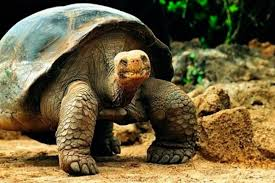

Tortuga Galápagos

Hábitat y estilo de vida:
La tortuga de Galápagos (Chelonoidis nigra) es una de las especies de tortugas más grandes del mundo y puede vivir más de 100 años. Habita en las Islas Galápagos, donde se ha adaptado a diversos ecosistemas, desde zonas áridas hasta bosques húmedos. Son animales herbívoros, alimentándose de pasto, hojas y cactus.
Son de movimientos lentos, pero su resistencia es notable. Pueden sobrevivir meses sin agua ni comida debido a su capacidad de almacenar nutrientes. Su caparazón varía de forma según su hábitat: en zonas húmedas es más redondeado, mientras que en zonas áridas es más elevado para facilitar la extensión del cuello y alcanzar vegetación más alta. Son cruciales para su ecosistema, dispersando semillas y modificando la vegetación.
Características
- Longevidad: Pueden vivir más de 100 años, siendo de los reptiles más longevos.
- Alimentación: Son herbívoras y se alimentan de hojas, hierbas y cactus.
- Adaptación: Pueden pasar largos periodos sin comida ni agua.
- Movilidad: Son lentas pero resistentes, recorriendo grandes distancias en busca de alimento.
- Estado de conservación: Se encuentran en peligro debido a la caza y la destrucción de su hábitat.
Regresar a la página principal